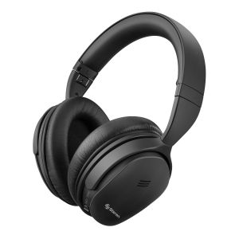

Auriculares Bluetooth
Auriculares inalámbricos Bluetooth con buena calidad de sonido. Ideales para escuchar música o hacer llamadas manos libres. Precio: Q60.
Auriculares inalámbricos Bluetooth con buena calidad de sonido. Ideales para escuchar música o hacer llamadas manos libres. Precio: Q60.
Batería externa para cargar dispositivos móviles mientras estás en movimiento. Capacidad de 10000mAh, compatible con la mayoría de los smartphones. Precio: Q80.
Ratón óptico inalámbrico con receptor USB. Diseño ergonómico para mayor comodidad durante el uso. Perfecto para computadoras portátiles y de escritorio. Precio: Q50.
Teclado inalámbrico compacto y ligero con conexión Bluetooth. Compatible con una variedad de dispositivos, incluyendo tablets y smartphones. Precio: Q40.
Altavoz Bluetooth portátil con sonido estéreo de alta calidad. Perfecto para llevar la música contigo dondequiera que vayas. Precio: Q70.
Adaptador USB-C a HDMI para conectar dispositivos USB-C a pantallas HDMI. Compatible con laptops, smartphones y tablets. Precio: Q45.